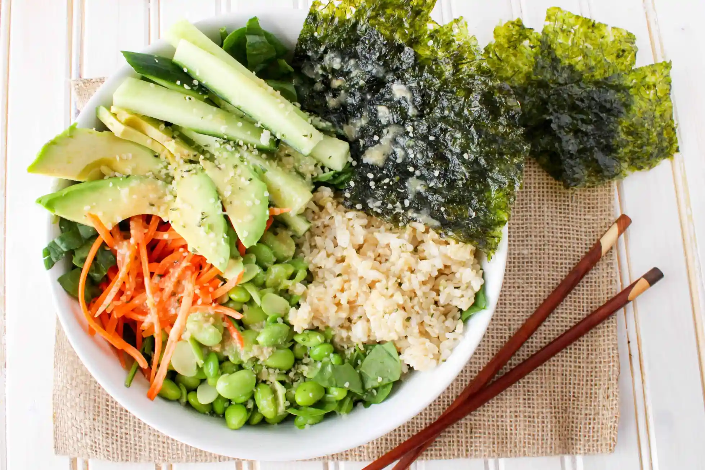

Dismantled Sushi Bowl

Description
The delicious flavors of a sushi roll without any fancy
equipment needed. Quick, variable, convenient, nutritious,
packable, and satisfying. Add salmon, ahi, or another meat
of your choice if you want an even heartier meal.
Ingredients
- 4 cups leafy green such as cabbage, spinach, or spring mix
- 2/3 cup cooked brown rice
- 1 1/2 cup cooked shelled edamame
- 1/2 cucumber sliced into strips
- 1/2 cup shredded carrots
- nori snack sheets
- 1/2 avocado
- 2tbsp sesame seeds
- 4 oz fish or meat (optional)
- miso ginger dressing (homemade or storebought)
Directions
- Add leafy greens to bottom of bowl.
- Top with sections of brown rice, edamame, cucumber, avocado,
seaweed, carrots, and fish (if using).
- Sprinkle sesame seeds on top.
- Drizzle dressing over the top.
- Serve and enjoy.
Return to Homepage